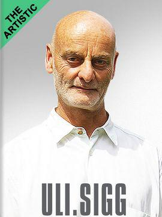
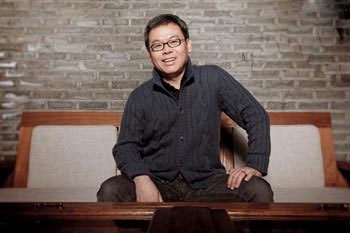
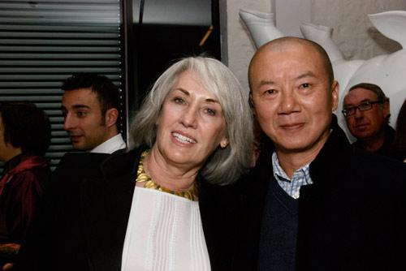

Guy and Myriam Ullens
As more and more Chinese people are getting rich, they have relatively limited investment opportunities. Stocks are unreliable, real estate is under control, and salt speculation against the radiation fears has no happy ending. As people start to buy artworks, Ullens sells part of his collections. You may ask: shall we follow the leading figure? The answer may be no. The arts market continues without Ullens, and there are many other leading people, such as Uli Sigg from Switzerland, Budi Tek from Indonesia, Judith Neilson from Australia and Kent and Vicki Logan from the USA. They are also huge fans of the temporary Chinese arts, each having hundreds of or even thousands of artworks. Since Ullens gives up, we need to shift our attention to others still involved in the game and their rules. After all, we have not gained the initiative.
In the short period as an interviewer and editor, I had interviewed Budi Tek, Uli Sigg and Judith Neilson and thus have a general impression of them. In short, Tek is a rich person who has paid high tuition and has not yet graduated. Sigg is a shrewd and capable old man. Judith is an ambitious lady. If it is said that China in the period of 1980s and 1990s belongs to Sigg and Ullens, Judith is striving to possess China in the first twenty years of the new century.
Sigg is smart, while Ullens is impulsive. The former invests in a hotel, and the latter owns an arts center. Both having a business in 798, they come up with totally different results, because people don't have to buy artworks, but they must sleep. Some say the failure of Ullens pleases Sigg the most, because this makes Sigg become No.1 among collectors of temporary Chinese artworks. This is ridiculous. Chinese sayings of "the teeth are cold when the lips are lost" and "a fire on the city gate brings disaster to the fish in the moat" are appropriate for this situation. As indicated by the buckets effect, Ullens and Sigg are plates that form the bucket, and loss of Ullens can never please Sigg and other plates. Sigg is clever. He has not opened any blog in China, thus avoiding disputes with Chinese peers. I remember during the interview, Sigg said he had not displaced any collection even if he did not like it. However, it is heard that Sigg displaces collections in private. Displacement itself is fine, as long as it does not generate many noises. Sigg is also aggressive, and is not content with controlling the Chinese arts industry in 1980s and 1990s. He also hopes that the Chinese Contemporary Art Award (CCAA) he founded can have a voice in arts creation and artistic criticism. However, due to Sigg's deep involvement in the Chinese contemporary arts and the complicated relationships, CCAA can not provide timely help, but completes the whole at best. Considering his status, as long as Sigg does not undersell his collections, it is the greatest support for the Chinese contemporary arts.
Judith is playing a role as that of Sigg twenty years ago. She is really rich, and it is heard that her family ranks third on the list of the richest in Australia. More important, she knows what she wants. I asked her why she collected artworks created after 2000 only. She said clearly that good ones created before 2000 have been bought by Sigg, Ullens and others. She is intelligent and pragmatic. She knows that she cannot compete with Sigg or Ullens as for collection of artworks in the past, but regarding the future, no one knows. Judith ranks first in terms of collection of artworks created after 2000. At the beginning of the year, the White Rabbit Contemporary Chinese Art Collection held in the White Rabbit Gallery amazed all of the Chinese artists present. Rather than following favorites in the Chinese market, Judith has set a value system of her own and collected work of many artists that have not been recognized in China. Therefore, we say Judith behaves just like Ullens and Sigg twenty or thirty years ago. At present, we need to go to Switzerland and Belgium to enjoy Chinese arts 30 years ago. Must we see Chinese arts of the present in Australia 30 years latter? Judith is supporting the Chinese contemporary art, and only those she recognizes.
The biggest difference between Budi Tek and Judith Neilson is that Tek looks backward while Judith looks forward. A gallery owner once said that we shall never doubt the intelligence of any collector. I have not doubted the wisdom of Tek, but I do not agree with his choice. He has paid high tuitions. In his early years, he won the attention of the industry with "purchasing artwork with high price" and "extremely high price". After the financial crisis, his collections should have depreciated by market value. I have nothing to say if you are willing to spend money on something hard to buy. Tek is still pursuing artworks with high price. Last year, he bought Chuang Shi Pian by Zhang Xiaogang at USD6.69 million, exciting the exhausted contemporary Chinese arts circle. But that was all. Tek always wants to settle in China. I remember at the end of 2008, he planned to build a contemporary arts center in Songzhuang. However, the financial crisis aggravated, so did the contemporary Chinese arts market, thus the plan ended up with nothing. Now, Tek has a new idea and has opened De-Club cafés in Beijing and Shanghai, to deepen the understanding of local culture. I think this is wise. Collection, especially collection with high price, aims at person rather than work. But I still have no idea why Tek wants to build a private art museum in Shanghai. He is supporting the contemporary Chinese arts and has input large sums of money. If we regard collection as gamble, both Judith and Tek stake a large amount of money, the former on transfer of a new valve system and the latter on permanence of the old value system.
Of course, there are far more than three persons that are supporting the contemporary Chinese arts. But these three persons represent different directions: the past, the present and the future. Sigg is the past, Judith may win the future, and Tek belongs to the present. We will know whether Tek is right about the future.

Uli Sigg

Budi Tek

Judith Neilson and Wang Zhiyuan
Profile:
Uli Sigg, Swiss, has collected nearly 2,000 contemporary Chinese artworks, and is the largest collector of the contemporary Chinese arts. The exhibition tour "Mahjong" focusing on his collections has promoted the internationalization of the contemporary Chinese arts. In 1998, Sigg founded the Chinese Contemporary Art Award (CCAA) and later incorporated critic award which is granted to excellent contemporary Chinese artists and critics.
Judith Neilson, Australian, has collected about 600 contemporary Chinese artworks. Different from other collectors, Judith only collects work created after 2000. Recently, aided by her husband Kerr Neilson, Judith founded the White Rabbit Contemporary Chinese Art Collection, under which the White Rabbit Museum is established.
Budi Tek, Indonesian, is a symbol in the collection of the contemporary Chinese artworks in Southeast Asia, and has collected nearly 1,000 artworks. The YUZ Foundation led by Tek owns a private art museum in Indonesia. Besides, he has settled in Beijing and Shanghai by opening De-Club cafés, and plans to build a private art museum in Shanghai.
(Originally from: Periodical • Chinese Contemporary Fine Arts, Issue 3 By Song Lei)